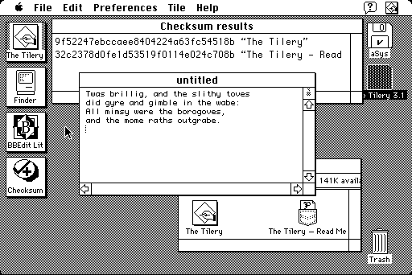

Download
thetilery3.1.zip (119K) The Tilery 3.1 repackaged into a zipped hfs disk image and checksum file. The disk image can be mounted with Mini vMac.
thetilery3.1.sit.hqx (160K) The Tilery 3.1 in the original format.official url (available version 4.2.1 requires 68020)
copyright: Semicolon Software
mod date: Aug 10, 1995
license: Freeware
Gives System 7 something like the Dock in OS X or the Taskbar in Windows. There are many options for the style and location of tiles.
It is implemented as a normal application, with no trap patching, extension, control panel, or init. This should avoid compatibility problems.

If you find these downloads useful, please consider helping the Gryphel Project, which hosts them.
Here are the md5 checksums for the downloads, signed with Gryphel Key 5:
--------- GRY SIGNED TEXT --------- 8945ed07579916ca926e3dab0a1601ec thetilery3.1.zip b0c92c6a58567a684a3f88fcea71ab82 thetilery3.1.sit.hqx ------- BEGIN GRY SIGNATURE ------- Gry/4Xa8CFcUzxdN/DLGXmmI/DpQS6eUMkZ40l3UYo8qurXeVpS9ek0dr9LNnr5m 90yPFXOam6OxGaH53jN92BMQWcL5zxhqIOxuE8qKxrEgN5srYw5FXTOJVbexVfHC zLK5odJ0kkH7X+SQCwTDvKRoxyPPSD9G401Uy3KgCKZvQH2xC1q2B/zXkhkkk12F -------- END GRY SIGNATURE --------